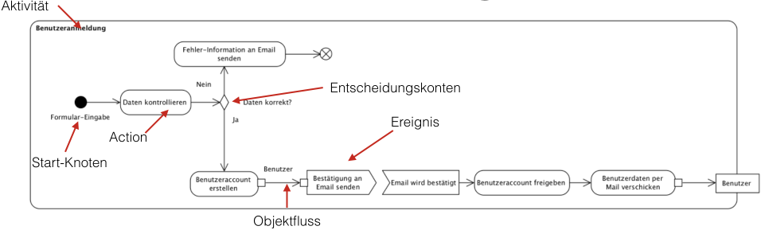
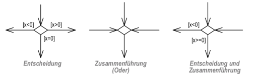
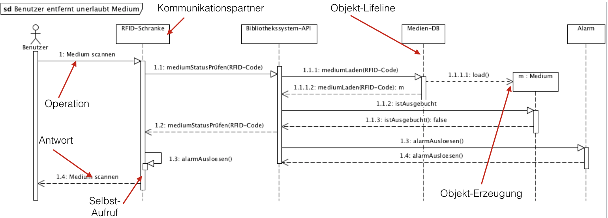

{% extends "../_base_template.html" %}
{% block title %}Lektion 7 - Ablaufplanung mit Aktivitäten und Sequenzen{% endblock %}

{% block sections %}
<section data-markdown>
<textarea data-template>
<i class="fas fa-flask"></i> Besprechung Hausaufgabe State Machine
=============================

Beispiellösung Maskenablauf der Hausaufgabe
* Hat jeder State (Maske) mind. einen Ein- UND Ausgang? (Keine "Dead Ends")
* Hat jeder Ausgang eine Event-Beschreibung? (Keine eventlosen Übergänge)


</textarea>
</section>

<section data-markdown>
<textarea data-template>
<i class="fas fa-graduation-cap"></i> OOD - Abläufe und Sequenzen
=============================

Heutiges Ziel: Gedrängtes Programm:
-------------

* Wir nehmen einen Prototypen des "BibSys" in Betrieb - Ausgangslage für Design-Analyse
* Sie wissen, was ein Aktivitätsdiagramm ist und wo man es einsetzt
* Sie können eigene Aktivitätsdiagramme für Ihr Software-Design entwickeln
* Sie entwerfen ein Aktivitätsdiagramm durch Analyse eines bestehenden Programms
* Sie wissen, was ein "Szenario" ist
* Sie können Szenarien mit Sequenzdiagrammen abbilden
* Sie können eigene Szenarien für Ihr Software-Design entwickeln

### Hausaufgaben

* UML Aktivitätsdiagramm erstellen
* UML Sequenzdiagramm erstellen: Medien am Terminal ausleihen

</textarea>
</section>

<section data-markdown data-separator-notes="^Note:">
<textarea data-template>
<i class="fas fa-wrench"></i> Inbetriebnahme des Bibsys-Prototypen
===========

Auf Moodle finden Sie einen rudimentären Prototypen des Programm "Bibsys":

* Der Prototyp ist ein Java-Konsolen-Programm
* Es zeigt exemplarisch einige wenige Schritte: Login, Hauptmenu, Ausleih-Liste
* Es implementiert eine rudimentäre Persistenz-Schicht: Alle Daten werden als Java-Objekte serialisiert und im Filesystem abgelegt.

Wir nehmem das Programm gemeinsam in Betrieb.

Beim ersten Start werden ein paar Demo-Daten angelegt.

* Benutzer: "benutzer1", "benutzer2", "benutzer3"
* Passwort: "1", "2", "3"

Dieser Prototyp ist die Ausgangslage für die weitere Analyse: Wir spielen hier ein weiteres Szenario der Analysephase durch: **Analyse eines bestehenden Programms.**

<i class="far fa-hand-point-right"></i> Es ist mir wichtig, dass Sie auch lernen, fremden Code zu lesen und zu verstehen. Wir benützen daher dieses Vorgehen, um unser Programm kennenzulernen.

</textarea>
</section>


<section>
<section data-markdown data-separator-notes="^Note:">
<textarea data-template>
<i class="fas fa-graduation-cap"></i> Abläufe planen mit Aktivitätsdiagrammen
===========

* Das **Aktivitätsdiagramm** beschreibt die Ausführung / Ablauf von Funktionalität / Verhalten. Es gehört zum dynamischen Modell
* Es eignet sich sehr gut, um komplexe Use-Cases resp. Abläufe zu präzisieren. Es stellt einen komplexen Ablauf / Aktivität als grafisches **„Flussdiagramm“** dar.
* Es besteht aus einem **Kontrollfuss** (Ablauf) und einem **Datenmodell** (Datenaustausch zwischen den Aktionen / Funktionen)
* Ein- und Ausgabeobjekte sind optional, es können auch Start- und Endknoten verwendet werden.
* Objektflüsse können aufgezeigt werden (wie "wandern" Objekte durch das Programm)


</textarea>
</section>

<section data-markdown data-separator-notes="^Note:">
<textarea data-template>
<i class="fas fa-graduation-cap"></i> Abläufe planen mit Aktivitätsdiagrammen
===========

* Durch Verzweigungen entstehen mehrere **Szenarien**: Jeder Weg durch das Diagramm stellt **ein Szenario** dar. Wir betrachten
  Szenarien später bei den Sequenzdiagrammen.

  
* Benutzen Sie **"Swim Lanes"** (horizontale/vertikale Gruppierungen), um die Aktivitäten den verantwortlichen Modulen zuzuordnen:
  Dies können z.B. die Software-Layer sein, oder auch einzelne Klassen / Objekte, wo die Aktivität stattfindet.

  
</textarea>
</section>
</section>

<section>
<section data-markdown data-separator-notes="^Note:">
<textarea data-template>
<i class="fas fa-graduation-cap"></i> Was ist ein "Szenario"?
===========

* Ein Szenario "verfeinert" einen Ablauf, einen Use-Case.
* Sie finden sowohl in der **Analyse** wie auch in der **Design-Phase** eine Anwendung.
* Szenarien decken **eine Variation** durch einen Use-Case / durch einen Ablauf ab (z.B. erfolgreiche Anmeldung). Weitere Variationen bilden ein **neues Szenario**
* Sie helfen, **Operationen** / **Methoden** zu finden.
* Sie können als **Test-Szenario** verwendet werden.

</textarea>
</section>

<section data-markdown data-separator-notes="^Note:">
<textarea data-template>
<i class="fas fa-graduation-cap"></i> Szenarien mit Sequenzdiagrammen abbilden
===========

* Sequenzdiagramme zeigen die **zeitliche Interaktion** zwischen einzelnen „Teilen“: Klassen/Objekte, Teilsysteme, Akteure, Abteilungen ...
* Zum Sequenzdiagramm gehört eine kurze Beschreibung in der Form (Direkt im/auf dem Diagramm)
  * Name des Szenarios
  * Bedingungen, die zu dieser Variation führen
  * Ergebnis des Szenarios



</textarea>
</section>
</section>

<section data-markdown data-separator-notes="^Note:">
<textarea data-template>
<i class="fas fa-wrench"></i> Aktivitätsdiagramm entwickeln: VisualParadigm
===========

Kurze Einführung in Aktivitätsdiagramme mit VisualParadigm: Wir schauen uns die wichtigsten Funktionen im UML-Tool an:

* Erstellen eines Aktivitätsdiagrammes
* Aktivitätsrahmen
* Actions/Schritte
* Start/Endknoten
* Objektfluss, Input-/Output-Pins
* Verzweigungen / Zusammenführungen
* Swim Lanes

</textarea>
</section>

<section data-markdown data-separator-notes="^Note:">
<textarea data-template>
<i class="fas fa-wrench"></i> Sequenzdiagramme entwickeln: VisualParadigm
===========

Kurze Einführung in Sequenzdiagramme mit VisualParadigm: Wir schauen uns die wichtigsten Funktionen im UML-Tool an:

* Erstellen eines Sequenzdiagrammes
* Life-Lines mit Klassen/Objekten
* Messags / Replies
* Selbstaufrufe
* Objekt-Instanzierung

</textarea>
</section>

<section data-markdown data-separator-notes="^Note:">
<textarea data-template>
<i class="fas fa-wrench"></i> Aktivitätsdiagramm entwickeln (Gruppe 1)
===========

Aktivitätsdiagramme sind wichtig, um komplexe Programmabläufe zu planen / zu dokumentieren.

Ich stelle Ihnen einen rudimentären, lauffähigen Prototypen von "Bibsys" zur Verfügung. Entwickeln Sie daraus durch Analyse des Programmcodes ein Aktivitätsdiagramm:
**Code-Analyse** ist eine gängige Art, an Abläufe "heranzukommen": Gerade bei alten, bestehenden Applikationen ist Code-Analyse vielmals die einzige Möglichkeit,
um komplexe Abläufe zu ermitteln.

**Lesen von Code** ist eine wichtige Fähigkeit, die Sie als Entwickler lernen (müssen): Ca. 80% des Entwickleralltags besteht aus LESEN, nicht SCHREIBEN von Code.

**Aufgabe: Analyse des BibSys-Programms als Aktivitätsdiagramm**

Entwickeln Sie ein Aktivitätsdiagramm durch Analyse des Bibsys-Codes:

* Das Diagramm zeigt den Ablauf vom Programmstart -> Maske Login (Klasse LoginView) -> Maske Hauptmenu (Klasse MainMenuView) -> Maske Ausleihe-Liste (Klasse AusleihListView)
* Das Diagramm zeigt auch die Verzweigungen auf (fehlerhafter Login, Masken beenden, etc.): Es zeigt also kein Szenario, sondern das Ablaufdiagramm mit allen Eventualitäten bis zur Ausleih-Liste-Maske.
* Teilen Sie die Aktivitäten in **Swim Lanes** ein: Eine Swim Lane zeigt die **Klasse**, welches die Aktivität ausführt.

* analysieren Sie (technischen, programmatischen) Schritte vom Programmstart bis zur Maske "Ausleihe-Liste", wie oben beschrieben
* Analysieren Sie sich die verschiedenen Szenarien (Verzweigungen), die auftreten können (z.B. User unbekannt etc.)
* Nehmen Sie die [ **"Checkliste 006 Aktivitätsdiagramme"** ](https://moodle.bztf.ch/pluginfile.php/26810/mod_folder/content/0/Checkliste_006_Aktivita%CC%88tsdiagramm.pdf?forcedownload=1) zur Hilfe: Sie zeigt Ihnen, auf welche Kriterien Sie achten müssen.
* Prüfen Sie die **Qualität Ihres Aktivitätsdiagrammes** anhand der "analaytischen Schritte" in der Checkliste.

Am Ende der Stunde (ca. 15min vor Schluss) schauen wir Ihren Stand an.

**Hausaufgabe**

Stellen Sie das Aktivitätsdiagramm fertig. Einreichen via Moodle.
</textarea>
</section>

<section data-markdown data-separator-notes="^Note:">
<textarea data-template>
<i class="fas fa-wrench"></i> Design: Szenario analysieren (Gruppe 2)
===========

Sequenzdiagramme werden in der Design-Phase verwendet, um die zeitlichen Abläufe von Meldungen (Methodenaufrufen) zwischen Objekten / Klassen darzustellen.

**Aufgabe:**

Analysieren Sie das bereits bestehende TECHNISCHE Szenario vom Bibsys-Prototypen (durch Analyse des Java-Codes): **Ausgeliehene Medien anzeigen**

1. Starten Sie den Bibsys-Prototypen
2. Loggen Sie sich ein (Username: benutzer1, Passwort: 1), Szenario: erfolgreiches Login
3. Wählen Sie "1 Ausgeliehene Medien anzeigen"
4. die Medienliste wird angezeigt.
5. Der Benutzer wählt so lange "0", bis das Programm beendet wird.

Zeichnen Sie den gesamten Ablauf dieses Szenarios als technisches Sequenzdiagramm auf:

* Welche Klassen / Objekte sind involviert? Diese stellen die Kommunikationspartner dar.
* Welche Methoden werden in welcher Reihenfolge ausgeführt?
* Nehmen Sie dazu die **Anforderung des Bibliothekssystems** und die Use Cases zur Hilfe: Diese definieren die geforderte Funktionalität.
* Nehmen Sie die [ **"Checkliste 007 Sequenzdiagramm"** ]( https://moodle.bztf.ch/pluginfile.php/26810/mod_folder/content/0/Checkliste_007_Szenario.pdf?forcedownload=1) zur Hilfe: Sie zeigt Ihnen, auf welche Kriterien Sie achten müssen.
* Prüfen Sie die **Qualität Ihres Sequenzdiagrammes** anhand der "analaytischen Schritte" in der Checkliste.

Am Ende der Stunde (ca. 15min vor Schluss) schauen wir Ihren Stand an.

**Hausaufgabe**

Stellen Sie das Sequenzdiagramm fertig. Einreichen via Moodle.
</textarea>
</section>

{% endblock %}
